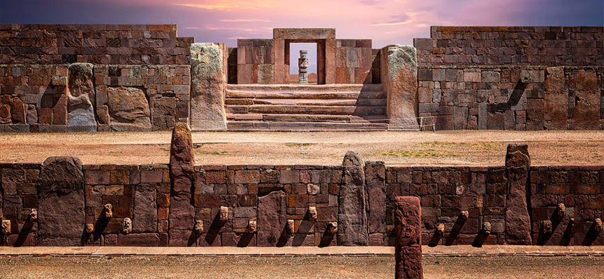
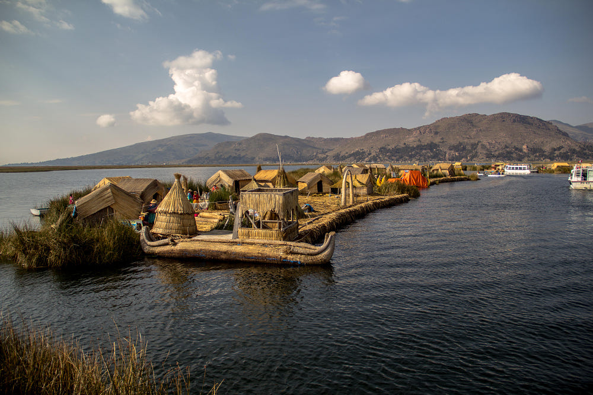
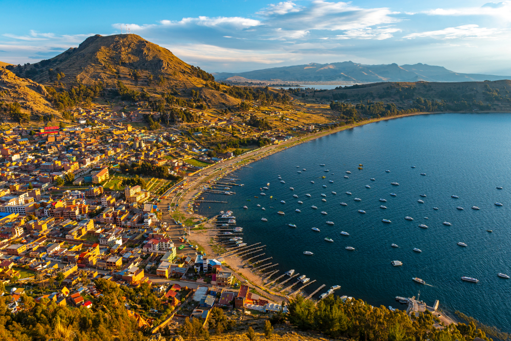
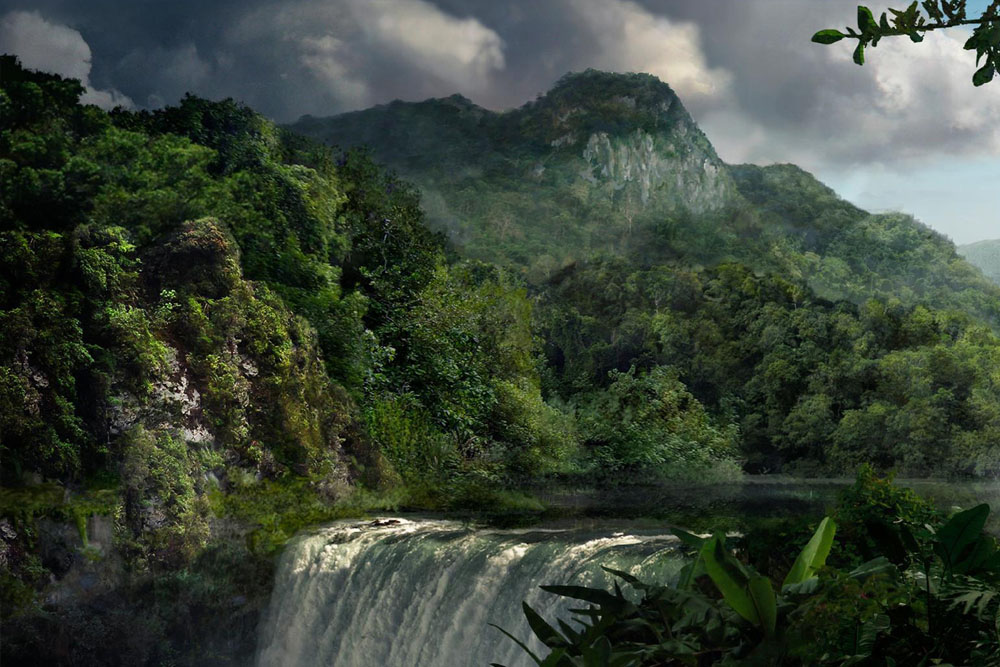
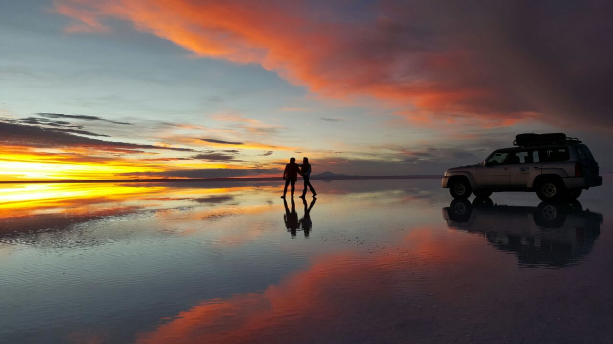
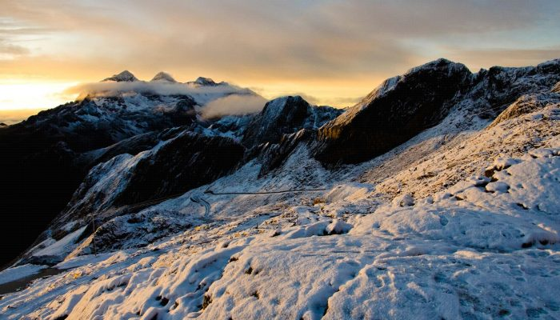
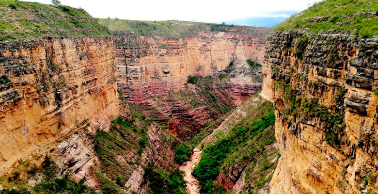

BOLIVIA
¡Te Espera!
TIAHUANACO

DESCRIPCION
Es una de las culturas preincaicas más importantes de Sudamérica. Tiahuanaco encabeza la lista de lugares turísticos de Bolivia no solo por su importancia histórica, por la meseta del Collao y se encuentra a 15 kilómetros al sureste del lago Titicaca.
Se destaca por la arquitectura monumental decorada con relieves y planos incisos colocados sobre estelas, y sus de grandes dimensiones como:
- - La pirámide de Akapana.
- - La enigmática Puerta del sol.
- - El misterioso Pumapunko.
- - Kalasasaya, templete semisubterráneo.
LAGO TITICACA

DESCRIPCION
Es uno de los más impresionantes lugares turisticos en Bolivia. El lago Titicaca es el lago navegable más alto del planeta, con 300 metros de profundidad, sus aguas son tranquilas y tienen un reflejo brillante, pues se encuentra a más de 3.800 metros sobre el nivel del mar.
Ubicado en el Altiplano andino, pertenece a Bolivia y Perú. Este inmenso lago alberga especies acuáticas, como las ranas gigantes. Existen más de 90 Islas flotantes hechas de totora, ancladas en el suelo.
COPACABANA

DESCRIPCION
Una pequeña ciudad junto al lago Titicaca. Es un importante centro de peregrinación, pues en la Basílica de Nuestra Señora de Copacabana se encuentra la imagen de la Virgen de Copacabana o santuario de la Virgen Morena, fue tallada en 1592 por el artista nativo y descendiente de los Incas Francisco Titto Yupanqui.
Ubicada a 150 kilómetros de la Ciudad de La Paz y a orillas del Lago Titicaca; es un importante centro turístico y de peregrinación de Bolivia.
PARQUE NACIONAL
MADIDI

DESCRIPCION
El Parque Nacional Madidi fue establecido en 1995 y se encuentra al noroeste del departamento de La Paz. Es uno de los parques nacionales de Bolivia más conocidos y tiene una extensión de más de 1.8 millones de hectáreas. Es una de las áreas protegidas más grande de Bolivia y uno de los lugares más biodiversos del planeta tanto en flora como en fauna. El Parque Nacional Madidi es un lugar de ensueño para los amantes de los animales y de la plantas. Este parque es también ideal para aprender sobre diferentes plantas medicinales de la Amazonía.
SALAR DE UYUNI

DESCRIPCION
El Salar de Uyuni es uno de los lugares turísticos más importantes de Bolivia. Es el desierto de sal continuo más extenso del mundo con una superficie de más de 12000 km2. Se encuentra a 3650 metros de altura y constituye una de las mayores reservas de litio del mundo.
Sus paisajes surrealistas hacen que sea uno de los lugares turísticos de Bolivia más visitados. Se encuentra rodeado por el altiplano boliviano y volcanes y es un paraíso para los fotógrafos por sus diversos paisajes.
Cerca del Salar de Uyuni se encuentran el cementerio de trenes, volcanes, geysers, lagunas, entre otros.
CORDILLERA REAL

DESCRIPCION
Esta cordillera de los Andes bolivianos es la más visitada por turistas. Además, sus más de 600 picos que oscilan entre los 5500 y 6500 metros sobre el nivel del mar hace que esta cadena montañosa sea una de las más altas del planeta. Las diferentes cumbres de la Cordillera Real son aptas para escaladas en roca y hielo, caminatas, bicicleta de montaña, esquí, trekking, entre otros.Muchos de sus picos se encuentran en la cercanía de la ciudad de La Paz. Los más conocidos son el Huayna Potosí, Pico Austria y el Illimani.
PARQUE NACIONAL
TORO TORO

DESCRIPCION
Otro destino turístico muy importante en Bolivia es el Parque Nacional Toro Toro. El Paque Nacional Toro Toro se encuentra al norte del departamento de Potosí, a 140 kilómetros al sur de la ciudad de Cochabamba. Es un auténtico destino turísticos para los que gustan de la geología y panteología. En esta área se pueden observar pinturas rupestres, restos arqueológicos, fósiles y huellas de dinosaurios. El atractivo turístico más importante de la zona es el Cañón del Valle de Toro Toro. La importancia del Parque Nacional Toro Toro ha crecido exponencialmente en los últimos años por haber sido considerado como nueva maravilla del mundo.